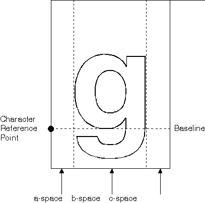

Kerning, like proportional spacing, is a type of letter spacing. In a kerned font, some characters are allowed to overhang others and, therefore, occupy an area that is less than each character's increment for that font. Usually this feature is restricted to pairs of characters whose appearance might benefit from greater proximity. The five character pairs that most commonly benefit from kerning are Yo, We, To Tr, and Ta.
Kerning is not available in the system-provided image fonts. The Helvetica and Times New Roman outline fonts provided with the system do include kerning information. You can specify kerning as a requirement on the GpiCreateLogFont. Selecting a kerned font lets kerning take place whenever it is defined.
The a-space is the area of the character cell before the character; the b-space is the area of the character cell occupied by the character; the c-space is the area of the character cell after the character. The a-space and c-space are shown in the following figure.
a-Space, b-Space, and c-Space
The best way to implement kerning is to use a kerning-pair table. The kerning table will exist only for certain pairs of characters for which adjustments are desirable.
Each of the entries in a kerning-pair table contains the code points of a pair of kerned characters and an adjustment that should be applied to the character width of the first character of the pair. A negative value means that the space is decreased, and a positive value means it is increased, whenever the two characters in a kerning pair are produced together. A kerning-pair table might be provided with a purchased font. If so, it will be recorded in the font header.
If kerning is specified on a character-pair basis (that is, if the font has a kerning-pair table), the font has a specific number of kerned pairs. GpiQueryKerningPairs returns kerning-pair information from the current logical font. For each pair of kerned characters, you are given the characters themselves and an adjustment in world coordinates that must be applied to the character width of the first character of the pair.
When you specify negative a- and c-space values, the values affect any character paired with the kerned character. Because this form of kerning cannot be applied selectively, you have to choose the kerned characters carefully. For example, an italic letter f ( ƒ ) is a good candidate for this sort of kerning, because it can overhang most of the characters that precede and follow it.
An application can adjust the amount of space between all characters in a font with GpiSetCharExtra. Any extra space is added to font kerning values. An application also can adjust the width of a font's break character (space) with GpiSetCharBreakExtra.
Kerning is not available on all devices. On devices that support kerning, kerning is enabled by default. When kerning is not supported on a device, kerning support is switched off by default. When kerning support is switched off, the kerning information supplied with a font is ignored. To determine whether a device supports kerning, use DevQueryCaps.
The kerning information can be implemented by your application when a character string primitive is written to an output device. This is called rendering the text. GpiCharStringPos and GpiCharStringPosAt, permit specification of the starting position for each character. The entire character string can be searched for character pairs that also are kerning pairs for the kerning information to be applied.